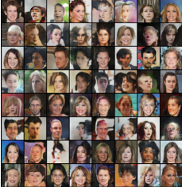
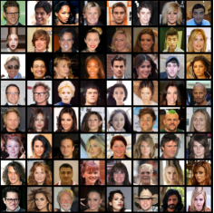

Fake Faces with DCGAN
Synthetic faces are now cheap enough to be a privacy and misinformation risk. To understand what they get right and wrong, I trained a deep convolutional GAN on CelebA from scratch, and compared it with two likelihood-based generators.
- Generative adversarial networks
- EECS 6327 · Probabilistic Models in ML
- York University
- PyTorch · CelebA
Real or fake?
Spot the generated face
GameEach tile is cut from either a grid of real CelebA photos or a grid of my DCGAN's samples, both at the same low resolution. Make a call, then see the answer.
How DCGAN works
Two networks play a minimax game. The generator G turns random noise into an image; the discriminator D sees real and generated images and outputs the probability that its input is real. G improves only by fooling D. At the game's equilibrium G reproduces the data distribution and D can do no better than a coin flip.
- All-convolutionalStrided convolutions replace pooling, so the networks learn their own up- and down-sampling.
- Batch normNormalisation in both networks (except G's output and D's input) keeps gradients healthy.
- ActivationsReLU in the generator with tanh at the output; LeakyReLU throughout the discriminator.
- LossBinary cross-entropy on D's real/fake call, optimised with Adam for both players.
Results


The samples are convincing at thumbnail size, especially for hair and skin tone. Up close, the classic GAN failures show: asymmetric eyes, warped jawlines and a few near-duplicate faces, a sign of partial mode collapse. Adversarial training also never settles; the generator and discriminator losses keep oscillating rather than converging.
How it compares
The same study trained a normalizing flow and a variational autoencoder on the same data. Each family trades speed, sharpness and structure differently.